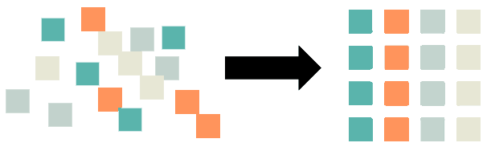

Streamline your data collection, processing and analysis process. With a focus on eye tracking and biometrics, we support you to develop novel metrics, dashboards and visualizations and synchronize data streams from multiple devices.
Portfolio
Marker Tracking and Eye Tracking
Laboratory experiments in psychology are often criticized for being far from reality. To achieve higher ecological validity, mobile research equipment can be used.
RECENT ADVANCES IN EYE TRACKING – PART 1
Updates from recent events in the fields of eye tracking technology and research.
Marker Detection & Perspective transformation using OpenCV for Python
A simpler solution to detect and track an object (or surface) is to attach unique markers on it and track those instead!
RECENT ADVANCES IN EYE TRACKING – PART 2
Updates from recent events in the fields of eye tracking technology and research.